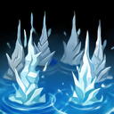

核心裝備
 日炎聖盾
日炎聖盾- 寒冰霸拳
 荊棘之甲
荊棘之甲 自然之力
自然之力 好戰者鎧甲
好戰者鎧甲
以下為本站 7.2d 校正後的標準配置；實戰仍需依敵方陣容調整。


技能優先：E > W > Q
對同一目標的第一次普攻會造成額外物理傷害並短暫定身；切換不同英雄可分別觸發。
向前射出鐵錨，命中敵人時拉近雙方；命中地形時則把納帝魯斯拉向牆面並縮短部分冷卻。
獲得依最大生命成長的護盾，護盾存在期間普攻會對目標與附近敵人造成額外魔法傷害。

從自身向外連續震出多道衝擊波，造成魔法傷害與緩速；貼身目標可能被多道波浪命中。
鎖定敵方英雄發出追蹤衝擊波，沿途擊飛敵人，抵達目標時造成傷害、擊飛與暈眩。
1技 → 被動定身 → 3技 → 2技
鉤中後先普攻觸發定身，再用三技緩速；二技護盾用來承受反打。
4技 → 1技 → 普攻 → 3技
大絕逼迫目標走位或擊飛後接鐵錨，形成長時間單點控制。
2技 → 被動普攻 → 3技 → 1技撤退或追擊
先開盾再普攻定身，三技打滿多道衝擊波，鐵錨保留作追擊或拉牆撤退。
前期靠被動定身與 E 清線，Q 沒把握時寧可留作威懾。
中期推線後跟打野找河道抓人，大絕優先鎖無位移核心。
後期站在隊伍前方做反開，Q 可勾牆位移，不一定只能拿來開敵人。
對局名單是本站依英雄機制與目前配置整理的參考，不等同固定勝率。
巴龍路先看對線傷害類型，再看中後期前排、回復與控制；只替換真正需要的格子。
觸發：對線英雄以前期物理換血或普攻壓制為主。
改走鍍板鋼蓋→裝甲戰靴，直接降低物理與普攻換血壓力。
提醒：不要只看敵方整隊物理英雄數量；巴龍路這格優先服務前期直接對線。
觸發：對線英雄主要靠魔法傷害或控制建立換血優勢。
改走水星之靴→鎖鏈軍靴，補魔防、韌性與魔法護盾。
觸發：敵方有 2 名以上高生命／高抗性前排，且你在邊線或團戰必須長時間處理他們。
前排本身不需要硬轉全輸出，改用能隨目標生命造成持續傷害的防裝處理長戰。
觸發：敵方有明顯高治療、高吸血或團戰持續回復核心。
標準配置已經帶重創，維持原出裝即可。
觸發：敵方控制鏈會阻止你進場、追擊或完成輸出時。
改走水星之靴→鎖鏈軍靴，直接補韌性與魔防。
堅毅讓被控期間更耐打，適合前排承接第一波技能。
提醒：擊飛與壓制等控制仍要靠站位與時機判斷，不能把所有問題都交給裝備。
7.2a 巴龍路正式版：以 Riot 7.2a 平衡公告為版本基準，並交叉參考 WildRiftFire 7.2a Solo 指南與 WR-META 2026-07-18 巴龍排名；Tier 為本站綜合評級。｜技能名稱依 Riot Games 台灣《激鬥峽谷》英雄頁校正；巴龍路評級、符文、出裝、對局與實戰節奏以本站 7.2a 正式資料為基準。｜v40：巴龍路正式版，完整套用犽凝母版；補齊起手裝、核心三件、三組技能連招與雙欄對局。｜v47：巴龍路第 8 批正式版，套用犽凝固定母版。
本站於 2026-08-27 依 Patch 7.2d 重新檢查此配置。 Tier、出裝、符文與對局屬於 Wild Rift Guide 的整理與分析，不是 Riot Games 官方推薦；版本改動後會再依官方公告與實戰資料校正。